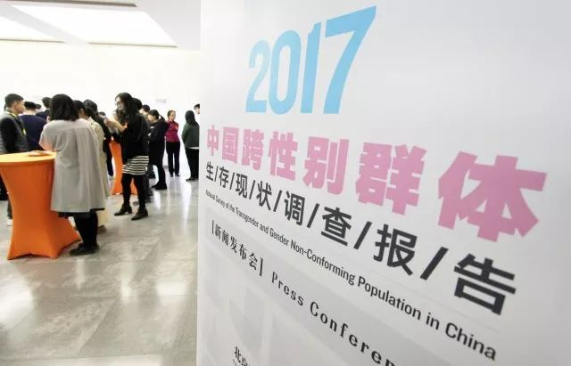
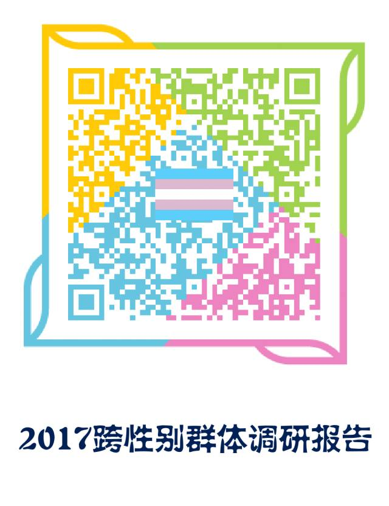
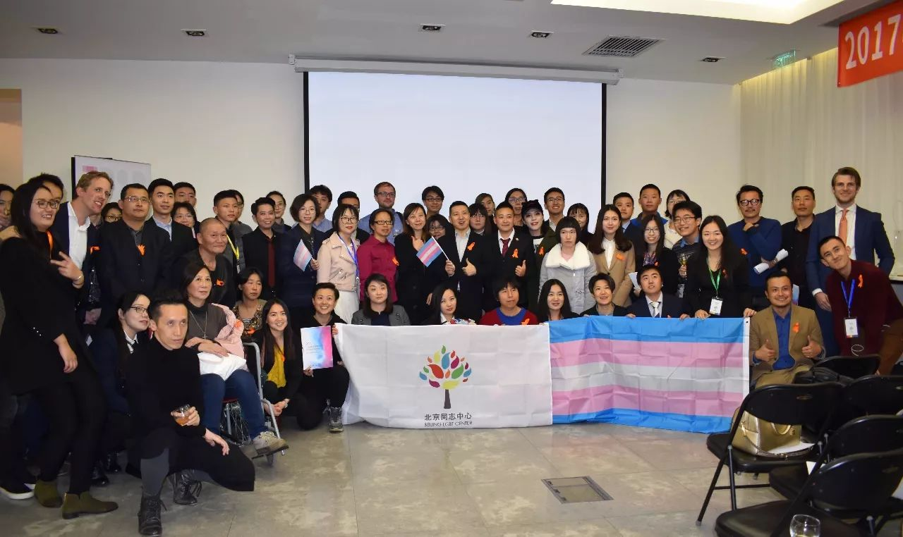
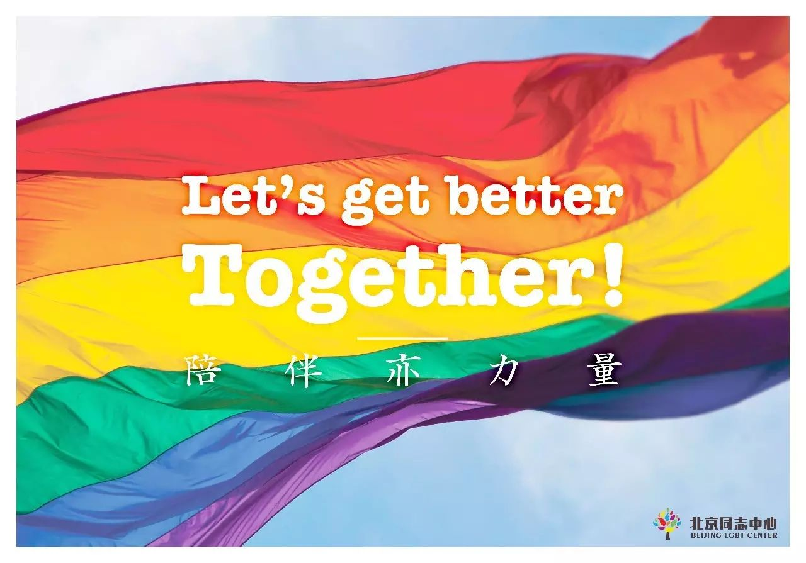

中国跨性别群体生存现状调查报告圆满发布
以下文章来源于北京同志中心 ，作者北京同志中心
北京同志中心官方微信。北京同志中心成立于2008年2月14日，作为一家民间公益组织，通过在北京地区提供社区服务和开展倡导活动来增强中国同志（LGBT）人群的自我认同；推动同志运动，消除歧视，实现平等；并促进多元文化和公民社会的发展。

2017年11月20日，国际跨性别日之际，《2017中国跨性别群体生存现状调查报告》在荷兰驻华使馆公开发布。此次调研由北京同志中心、北京大学社会学系共同发起，荷兰使馆支持，是国内样本数量最大的关于跨性别人群生存状况的量性调研。
发布会上，本项调研的支持方——荷兰王国驻华大使Ambassador Ed Kronenburg（高文博）、联合国开发计划署代表杨震先生，热情致辞表达了对中国跨性别人群现状的关注和支持。
荷兰王国驻华大使Ambassador Ed Kronenburg（高文博）
联合国开发计划署代表杨震先生
作为本次项目主要发起者，北京同志中心的执行主任辛颖（小铁）、跨性别项目主管Kelly，分别做了即席发言。“此刻站在讲台上，我激动得想哭，”小铁哽咽地说出这番话，几个月前，她在北京同志中心的一次跨性别分享会上遇到了一位父亲，他的孩子因跨性别身份不被家庭接纳，多重压力下，孩子最后选择了自杀。父亲追悔莫及，在分享会上泪流满面：“我来晚了！如果我能早来参加这个分享会，我就能理解孩子，他就不会自杀了。”那句”我来晚了“让小铁印象深刻，她说，”每个人都像星星和灯塔，当社会对多元性别态度友善时，更多的跨性别伙伴都能来得及！“
北京同志中心执行主任 辛颖
北京同志中心跨性别项目主管Kelly
多家同志机构、知名媒体、学术团体，和众名对同志议题密切关注的社会各界朋友们，应邀出席这次盛会。
跨性别人士丝丝、猪川等，现场表演了话剧《阴道之道》中关于跨性别者的精彩片段。
在发布会后召开的圆桌论坛中，跨性别领域的知名公益人士就这些热点议题展开了讨论。 参会人员有北京同志中心跨性别部门的主管Kelly、心理部门主管四月、UNDP项目官员杨震、爱之援助跨性别项目官员刘言、广州跨性别中心负责人HC以及社群代表C先生。现场从多个角度出发，探讨跨性别群体的生存现状，诸位嘉宾就如何提高群体的社会可见度提出自己的观点。作为全国首例跨性别就业歧视案当事人，C先生表示，“希望中国有一天，人们能在身份证上选择自己真正认同的性别，希望性少数群体都能得到法律承认。”
2017中国跨性别群体生存现状动画视频
长期以来，跨性别群体在社会上被认为是难以理解甚至充满神秘的群体。美国威廉姆斯学院的调查结果显示，在美国大约有0.6%的人是跨性别。很多人误以为跨性别是性取向的问题，可实际上，这与性取向没有必然联系，它与一个人的性别认同有关。所以不能将同性恋与跨性别划等号。

依照跨性别者对自我性别认同的情况，可分为三类：跨性别男性、跨性别女性和性别酷儿。
跨性别男性，又称女跨男
指出生时生理上被指派的性别为女性，
但自我认同为男性的人。
如李银河老师的伴侣大侠先生。
跨性别女性，又称男跨女
指出生时被指派的性别为男性，
但自我认同为女性的人。
如我们众所周知的舞蹈家金星老师。
无论其出生时的指派性别如何，
认同自己男女都不完全属于的人就是
性别酷儿
又称非二元性别者
如《奇葩来了》的人气选手超小米。
跨性别者打破性别规范或者寻求身体改变的诉求，往往不被大众理解，甚至被一些人视为“病态”。与此同时，跨性别者遭受家庭暴力（例如变性的儿女被逐出家门）、校园暴力（从因性别表达的“特殊”遭受打骂、嘲笑，到上厕所的难题）和种种社会歧视，以及寻求医疗服务的各种障碍……这些事件都屡见不鲜，但往往很难引发社会各界的严肃关注。
2017中国跨性别群体生存现状调研问卷调查对象包括跨性别者和非性别常规者，问题涉及中国跨性别群体的基本信息、性别认同、医疗环境、家庭情况、学校与职场、社会歧视、心理健康与服务、政策需求等方面。
圆桌会议现场
调查发现中国跨性别群体在社会生活的方方面面都承受着巨大压力与社会歧视，生存状况令人担忧。在2060名调查对象中，61.5%的人存在抑郁，73.2%存在焦虑，46.2%的人因为自己是跨性别而有过自杀想法，12.7%的人曾有过自杀行为。
实际上，用性别来衡量一个人是非常狭隘的观念。越来越多的跨性别者在向社会证明并发声，他们在各行各业都能做到同样优秀。
同样，也有越来越多的人开始关注到跨性别群体的权益：facebook在性别选择中，提供了56种性别选项；一些欧美国家，医疗保险已涵盖了跨性别手术和激素治疗；中国也开始推广跨性別友善的厕所的概念；世界卫生组织，正在为“跨性别去病理化”奋斗努力……
本次发布的《中国跨性别群体生存现状调查报告》，不仅仅是一项具有开创性的学术研究，更是数以百计的中国跨性别朋友们，通过公开发布的研究成果，向社会各界发出自己的声音，展示从每一位个体到汇聚而成的整个群体的真实的生存状况——或者说，是中国跨性别群体打破长久沉默的“集体出柜”。《中国跨性别群体生存现状调查报告》，是此类研究在现有条件下的蹒跚前行的第一步。千里之行始于足下，迈出第一步，是为了能够走得更远。
《中国跨性别群体生存现状调查报告》的发布会上，在友好的氛围和热烈的场面中顺利结束。在此，北京同志中心的全体同仁，再次感谢荷兰驻华大使馆和联合国开发计划署对本项研究的大力支持，感谢北京大学社会学系同仁的鼎力合作，感谢每一位为本项调查付出心血的志愿者。尤其是，再次向每一位多元性别的受访者，致以由衷的感恩和诚挚的祝福！
长按识别二维码或点击阅读原文，可下载：
1.2017 中国跨性别群体生存现状调研报告完整版（中文）
2.2017 中国跨性别群体生存现状调研可视化报告（中／英文）
（iOS平台暂不支持直接下载，请复制链接到浏览器或转至电脑使用网页下载）


作者：猪川
编辑：Jennifer
【文章精选】
【活动推荐】
拥抱2017最美的时光，与北同中心相约Des Link餐吧 | Dining Out
